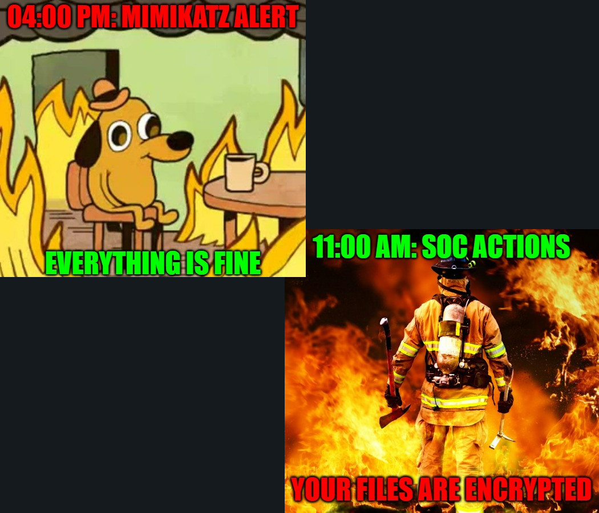

Relying on user feedback cause a real problem in the response time. SOC take some time to react, user take some time to respond and analyst take some time to remediate. Here a current example of the timeline:
- 04:00 PM: Malware detection
- 05:00 PM: Ticket opened with relay to user feedback
- 10:00 AM: user feedback
- 11:00 AM: Analyst actions
In this example, actions or remediations come 19 hours after the detection, a very long time for an incident response or a cyber attack.
The problem is: too many malwares alerts (and false positive) to have an emergency mode (with user call for example). Ticket is very slow for communication.
